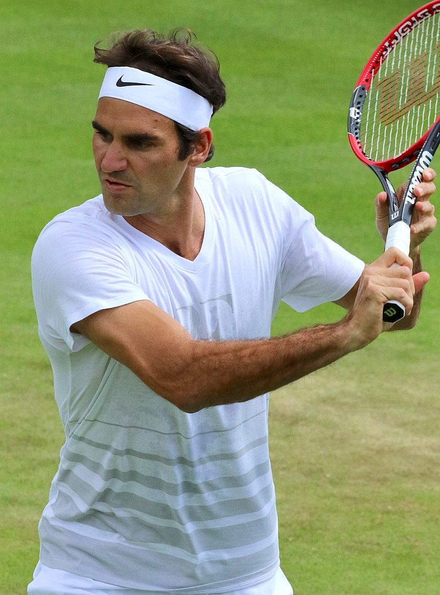
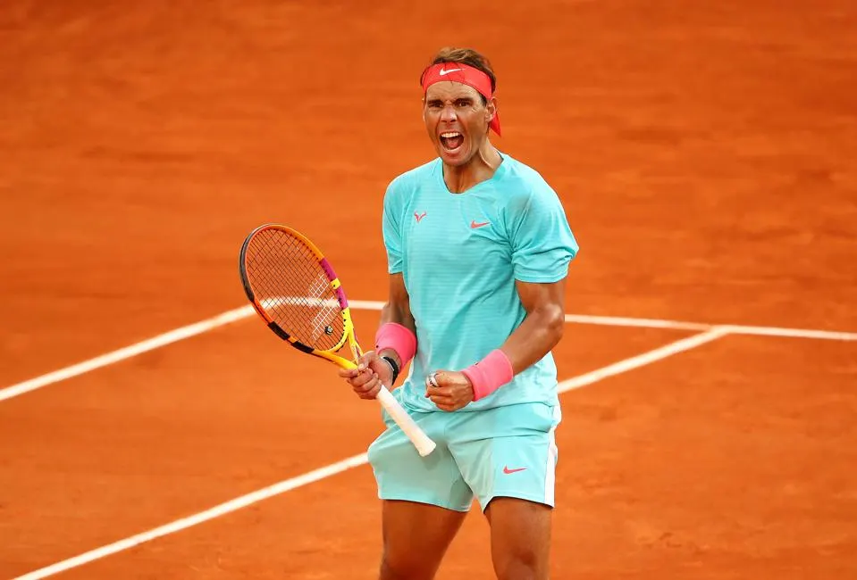

Roger Federer
Roger Federer is a Swiss professional tennis player. He is ranked world No 4 by the Association of Tennis Professionals (ATP). He has won 20 Grand Slam singles titles, the most in history

Roger Federer is a Swiss professional tennis player. He is ranked world No 4 by the Association of Tennis Professionals (ATP). He has won 20 Grand Slam singles titles, the most in history

Rafael Nadal is a Spanish professional tennis player. He is ranked world No 2 by the Association of Tennis Professionals (ATP). He has won 19 Grand Slam singles titles, the second most in history.

Novak Djokovic is a Serbian professional tennis player.
He is ranked world No
1 by the Association of Tennis Professionals (ATP).
He has won 17 Grand Slam singles titles.
| Player | Grand Slam Titles |
|---|---|
| Roger Federer | 20 |
| Rafael Nadal | 19 |
| Novak Djokovic | 17 |
Top 3 tennis players in the world